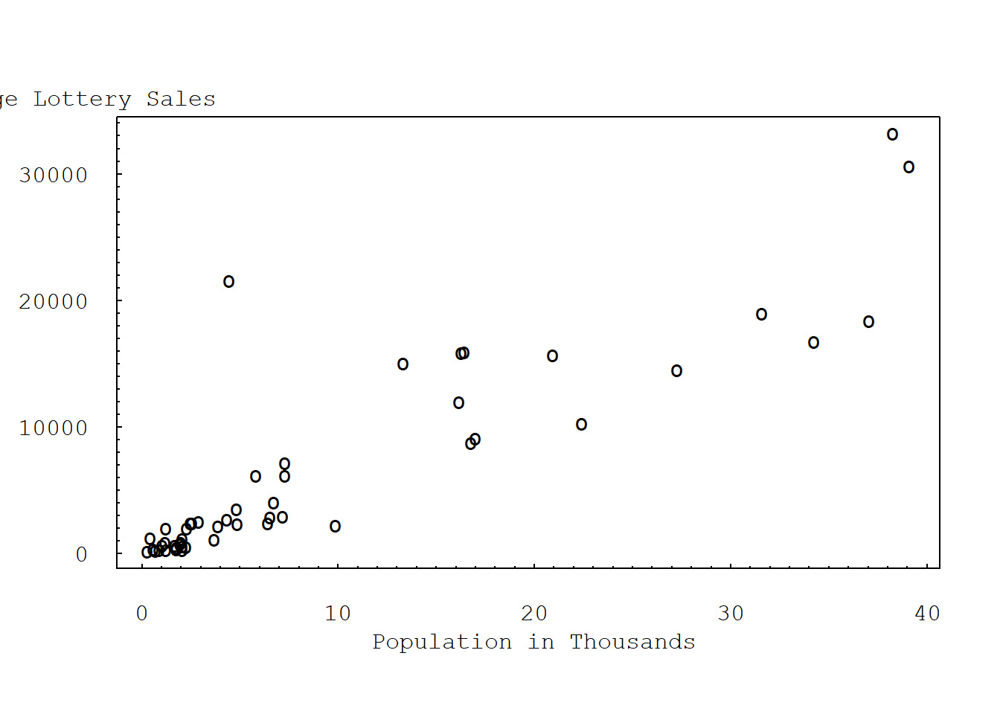
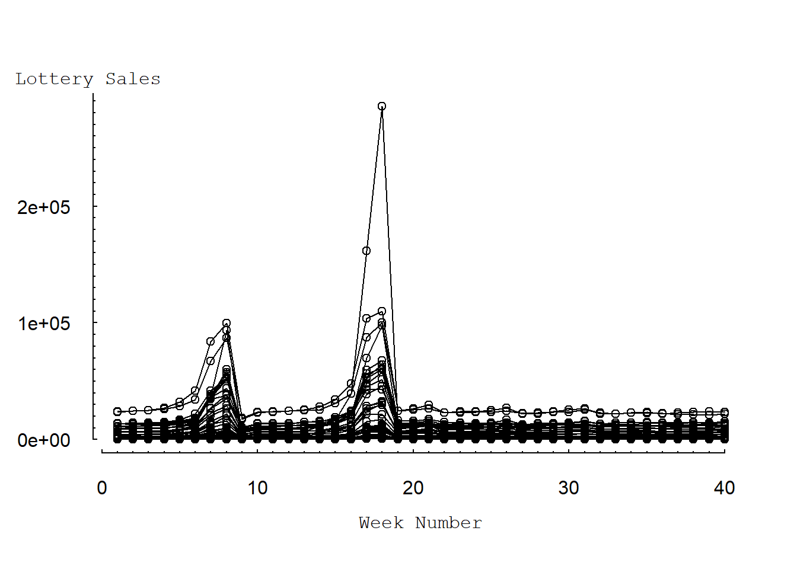
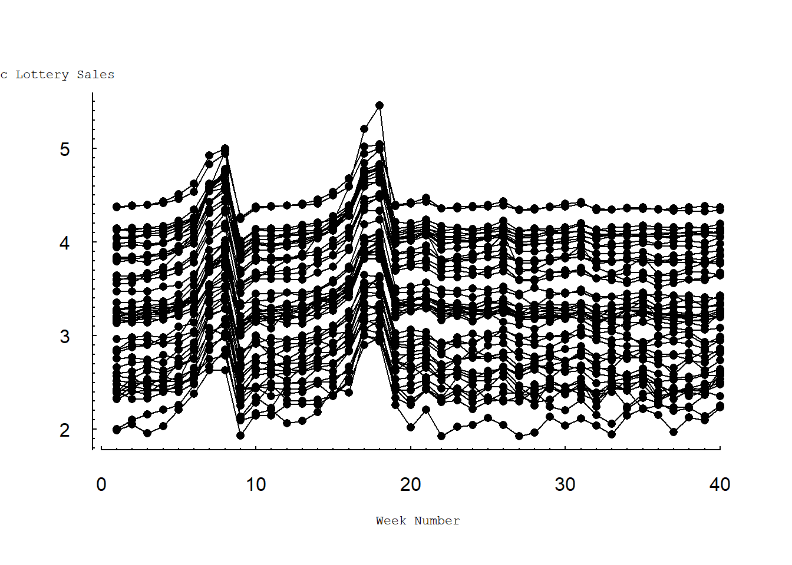
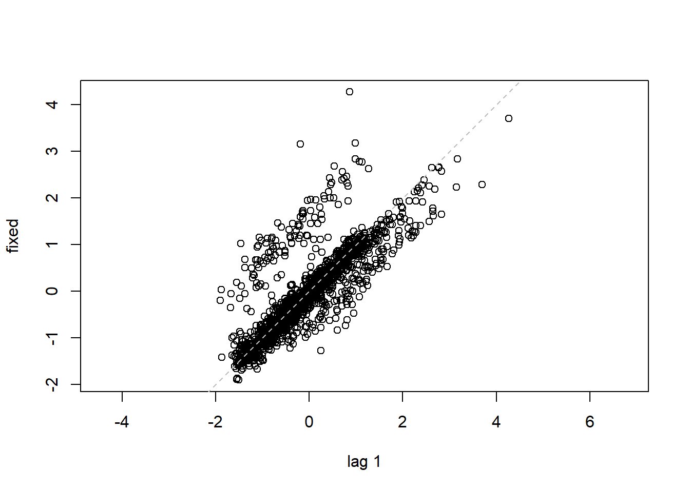
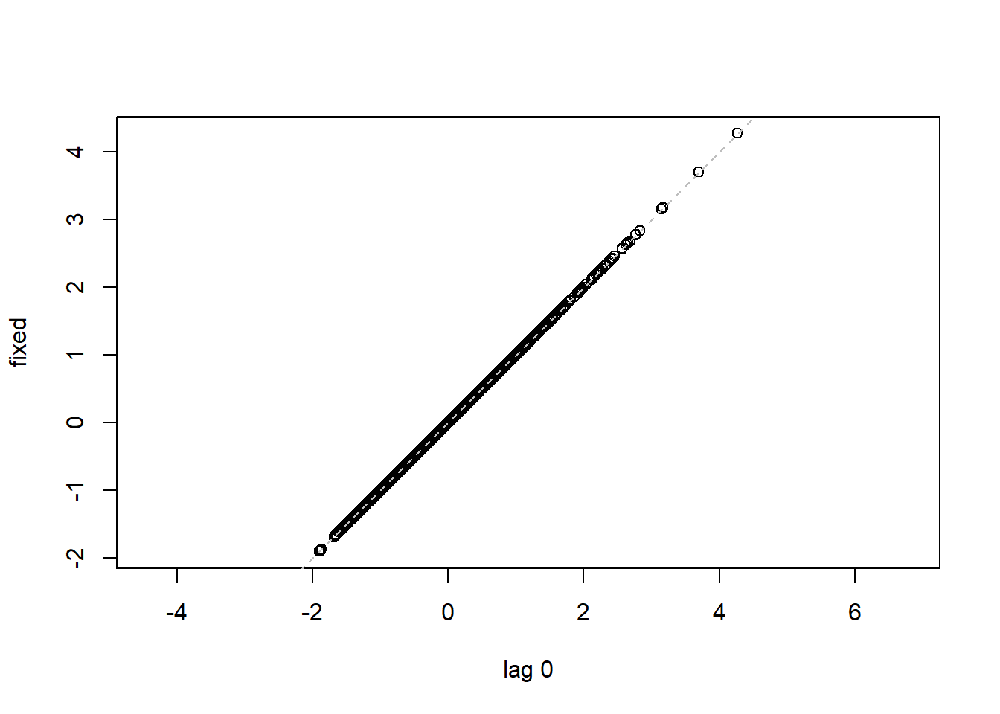
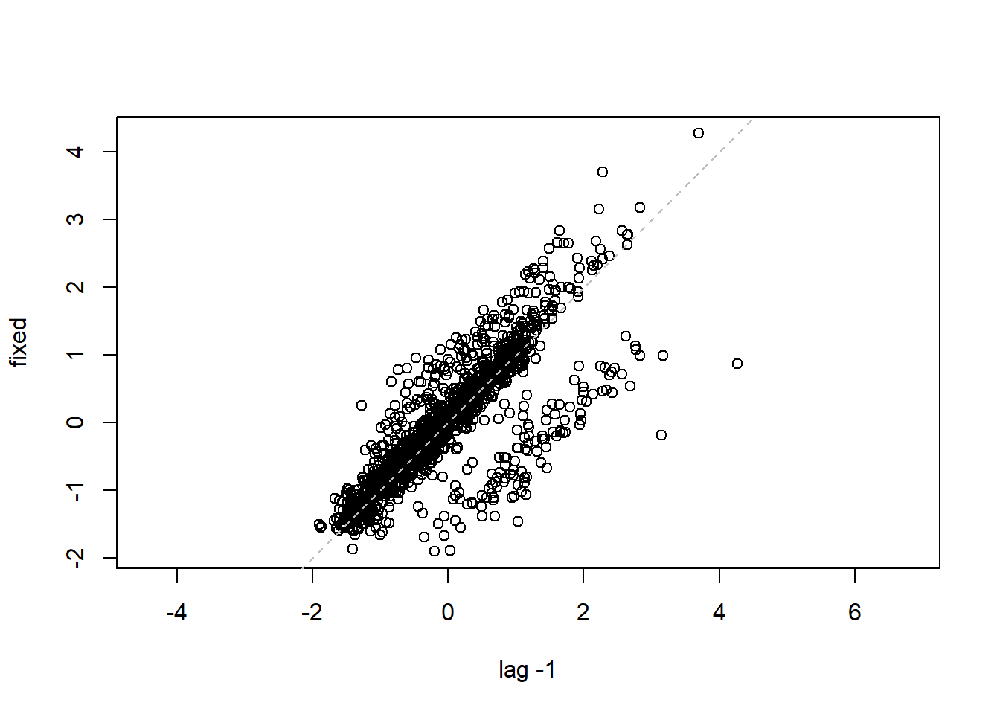
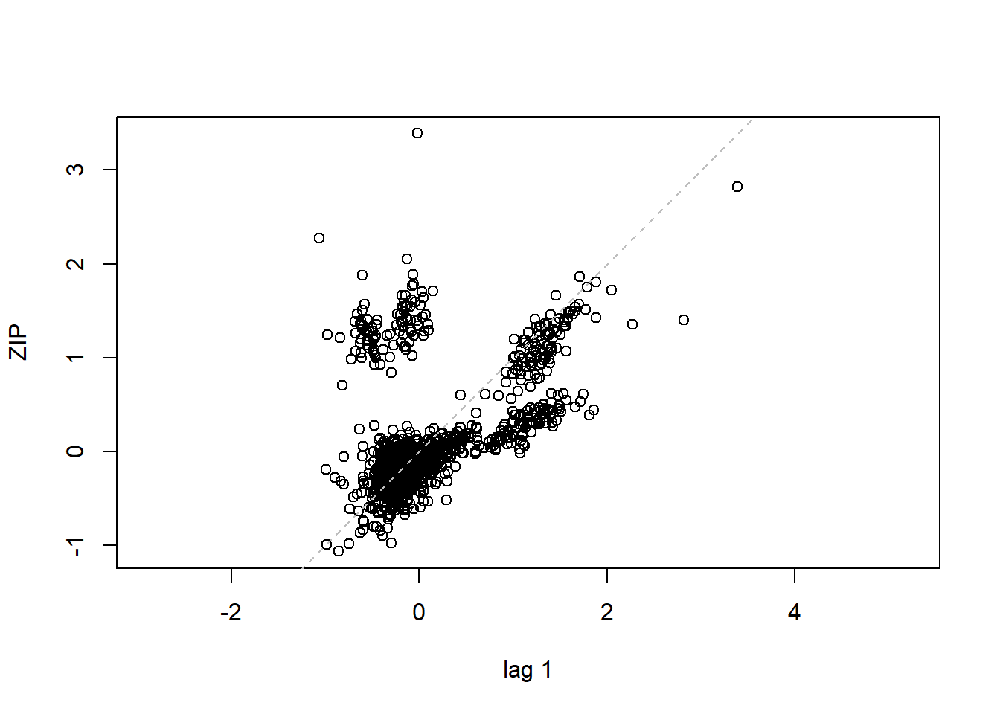
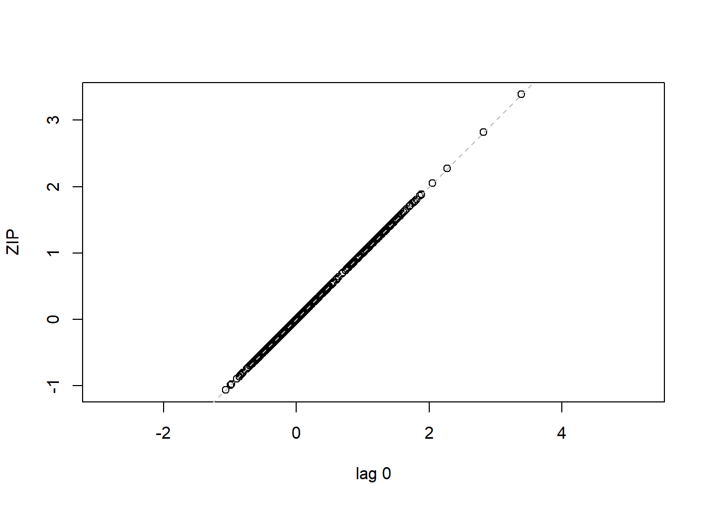
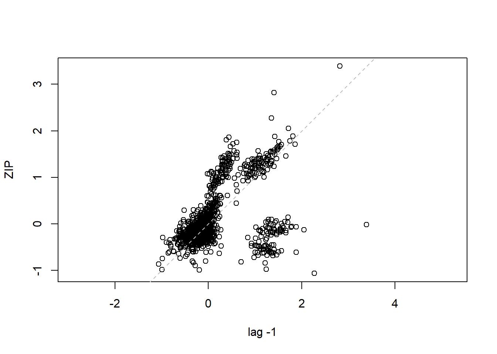

Chapter 4 Prediction and Bayesian Inference
4.1 Import Data
lottery = read.table("TXTData/Lottery.txt", sep ="\t", quote = "",header=TRUE)
#lottery=read.table(choose.files(), header=TRUE, sep="\t")State of Wisconsin lottery administrators provided weekly lottery sales data. We consider online lottery tickets that are sold by selected retail establishments in Wisconsin. These tickets are generally priced at $1.00, so the number of tickets sold equals the lottery revenue. We analyze lottery sales (OLSALES) over a forty-week period, April, 1998 through January, 1999, from fifty randomly selected ZIP codes within the state of Wisconsin. We also consider the number of retailers within a ZIP code for each time (NRETAIL).
| Variable | Description |
|---|---|
| OLSALES | Online lottery sales to individual consumers |
| NRETAIL | Number of listed retailers |
| PERPERHH | Persons per household MEDSCHYR Median years of schooling |
| MEDHVL | Median home value in $1000s for owner-occupied homes PRCRENT |
| PRC55P | Percent of population that is 55 or older |
| HHMEDAGE | Household median age |
| MEDINC | Estimated median household income, in $1000s |
| POPULATN | Population, in thousands |
#EXTRACT TIME - INVARIANT INFORMATION TO ANALYZE
mzip=d=as.data.frame(t(sapply(split(lottery[, c("NRETAIL", "PERPERHH", "OLSALES", "MEDSCHYR", "MEDHVL", "PRCRENT", "PRC55P", "HHMEDAGE", "MEDINC", "POPULATN")], lottery$ZIP),function(x) colMeans(x))))
# Extract time invariant information to analyze
# Notice: the code for this part on website is wrong.4.2 Example: Forecasting Wisconsin Lottery Sales (Page 138)
In this section, we forecast the sale of state lottery tickets from 50 postal (ZIP) codes inWisconsin. Lottery sales are an important component of state revenues. Accurate forecasting helps in the budget-planning process. A model is useful in assessing the important determinants of lottery sales, and understanding the determinants of lottery sales is useful for improving the design of the lottery sales system. Additional details of this study are in Frees and Miller (2003O).
4.2.1 TABLE 4.2: Time - invariant summary statistics
summary(mzip[,c("NRETAIL", "PERPERHH", "OLSALES", "MEDSCHYR", "MEDHVL", "PRCRENT", "PRC55P", "HHMEDAGE", "MEDINC", "POPULATN")]) NRETAIL PERPERHH OLSALES MEDSCHYR
Min. : 1.000 Min. :2.200 Min. : 189.0 Min. :12.20
1st Qu.: 3.000 1st Qu.:2.600 1st Qu.: 821.3 1st Qu.:12.50
Median : 6.362 Median :2.700 Median : 2426.4 Median :12.60
Mean :11.942 Mean :2.706 Mean : 6494.8 Mean :12.70
3rd Qu.:15.312 3rd Qu.:2.800 3rd Qu.:10016.5 3rd Qu.:12.78
Max. :68.625 Max. :3.200 Max. :33181.4 Max. :15.90
MEDHVL PRCRENT PRC55P HHMEDAGE
Min. : 34.50 Min. : 6.00 Min. :25.0 Min. :41.00
1st Qu.: 43.77 1st Qu.:19.25 1st Qu.:35.0 1st Qu.:46.00
Median : 53.90 Median :24.00 Median :40.0 Median :48.00
Mean : 57.09 Mean :24.68 Mean :39.7 Mean :48.76
3rd Qu.: 66.47 3rd Qu.:27.00 3rd Qu.:44.0 3rd Qu.:51.00
Max. :120.00 Max. :62.00 Max. :56.0 Max. :59.00
MEDINC POPULATN
Min. :27.90 Min. : 0.280
1st Qu.:38.17 1st Qu.: 1.964
Median :43.10 Median : 4.405
Mean :45.12 Mean : 9.311
3rd Qu.:53.62 3rd Qu.:15.446
Max. :70.70 Max. :39.098 # STANDARD DEVIATION
sqrt(diag(var(mzip[,c("NRETAIL", "PERPERHH", "OLSALES", "MEDSCHYR", "MEDHVL", "PRCRENT", "PRC55P", "HHMEDAGE", "MEDINC", "POPULATN")]))) NRETAIL PERPERHH OLSALES MEDSCHYR MEDHVL
13.2918231 0.2093820 8103.0125037 0.5514212 18.3731152
PRCRENT PRC55P HHMEDAGE MEDINC POPULATN
9.3425513 7.5112161 4.1431527 9.7835616 11.0981570 4.2.2 FIGURE 4.2: Look at the relationship
Figure 4.2 shows a positive relationship between average online sales and population. Further, the ZIP code corresponding to the city of Kenosha, Wisconsin, has unusually large average sales for its population size.
plot(OLSALES ~ POPULATN, data = mzip, xlab="", ylab="", xaxt="n", yaxt="n",pch="o", las=1, cex=1)
axis(2, at=seq(0, 40000, by=10000), las=1, font=10, cex=0.005, tck=0.01)
axis(2, at=seq(0, 40000, by=1000), lab=F, tck=0.005)
axis(1, at=seq(0,40, by=10), font=10, cex=0.005, tck=0.01)
axis(1, at=seq(0,40, by=1), lab=F, tck=0.005)
mtext("Average Lottery Sales", side=2, line=-3.5, at=36000, font=10, cex=1, las=1)
mtext("Population in Thousands", side=1, line=2, at=20, font=10, cex=1, las=1)
4.2.3 Sorting the data by zip then combine vectors into another data.frame
lottery$logsales<-log10(lottery$OLSALES)
m<-order(lottery$ZIP, lottery$TIME, lottery$OLSALES,lottery$logsales)
index<-as.data.frame(cbind(lottery$ZIP[m],lottery$TIME[m],lottery$OLSALES[m],lottery$logsales[m]))
names(index)<-c("ZIP", "TIME", "OLSALES", "LOGSALES")4.2.4 FIGURE 4.3: Lottery vs. week number
Figure 4.3 presents a multiple time-series plot of (weekly) sales over time. Here, each line traces the sales patterns for a particular ZIP code. This figure shows the dramatic increase in sales for most ZIP codes, at approximately weeks 8 and 18.
plot(OLSALES ~ TIME, data = lottery, axes=F, ylab="", xlab="", xaxt="n", yaxt="n")
for (i in index$ZIP) {
lines(OLSALES ~ TIME, data = subset(index, ZIP == i)) }
axis(1, at=seq(0,40, by=1), labels=F, tck=0.005)
axis(1, at=seq(0,40, by=10), cex=0.005, tck=0.01)
mtext("Week Number", side=1, line=2.5, cex=1, font=10)
axis(2, at=seq(0, 300000, by=10000), labels=F, tck=0.005)
axis(2, at=seq(0, 305000, by=100000), las=1, cex=0.005, tck=0.01)
mtext("Lottery Sales", side=2, line=-3, at=310000, font=10, cex=1, las=1)
Another way of producing multiple time series graph by using trellis xyplot:
library(lattice)
trellis.device(color=F) # telling the trellis device to mimic 'black and white'
xyplot(OLSALES ~ TIME, data=index, groups=ZIP, scales=list(y=list(at=seq(0, 300000,100000), tck=.01)), panel=panel.superpose, pch=16, lty=1, type="b")
#ChECK LOG VALUES
lottery$logsales<-log10(lottery$OLSALES)
lottery$lnsales<-log(lottery$OLSALES)4.2.5 FIGURE 4.4: Log lottery vs week number
Figure 4.4 shows the same information as in Figure 4.3 but on a common (base 10) logarithmic scale. Here, we still see the effects of the PowerBall jackpots on sales. However, Figure 4.4 suggests a dynamic pattern that is common to all ZIP codes. Specifically, logarithmic sales for each ZIP code are relatively stable with the same approximate level of variability. Further, logarithmic sales for each ZIP code peak at the same time, corresponding to large PowerBall jackpots.
#FIGURE 4.4 LOG LOTTERY vs WEEK NUMBER
plot(LOGSALES ~ TIME, data = index, type="p", axes=F, ylab="", xlab="", pch=16, mkh=0.0001, lwd=0.5)
axis(1, at=seq(0,40, by=1), labels=F, tck=0.005)
axis(1, at=seq(0,40, by=10), cex=0.4, tck=0.01)
mtext("Week Number", side=1, line=2.5, cex=0.7, font=10)
axis(2, at=seq(0, 6, by=0.1), labels=F, tck=0.005)
axis(2, at=seq(0, 6, by=1), las=1, cex=0.4, tck=0.01)
mtext("Logarithmic Lottery Sales", side=2, line=-1, at=5.8, font=10, cex=0.7, las=1)
for (i in index$ZIP) {
lines(LOGSALES ~ TIME, data=subset(index, ZIP==i)) }
4.3 Create model development sample
Lottery=lottery
Lottery$LNSALES<-log(Lottery$OLSALES)
Lottery2<-subset(Lottery, Lottery$TIME<36)4.3.1 MODEL 1. Pooled cross-setional model
lm1<-lm(LNSALES~PERPERHH+MEDSCHYR+MEDHVL+PRCRENT+PRC55P+HHMEDAGE+MEDINC+POPULATN+NRETAIL, data=Lottery2)
summary(lm1)
Call:
lm(formula = LNSALES ~ PERPERHH + MEDSCHYR + MEDHVL + PRCRENT +
PRC55P + HHMEDAGE + MEDINC + POPULATN + NRETAIL, data = Lottery2)
Residuals:
Min 1Q Median 3Q Max
-1.9743 -0.6012 -0.0774 0.5430 4.2015
Coefficients:
Estimate Std. Error t value Pr(>|t|)
(Intercept) 13.821060 1.339594 10.317 < 2e-16 ***
PERPERHH -1.084705 0.160224 -6.770 1.76e-11 ***
MEDSCHYR -0.821644 0.069049 -11.899 < 2e-16 ***
MEDHVL 0.013822 0.002662 5.192 2.33e-07 ***
PRCRENT 0.031820 0.003738 8.512 < 2e-16 ***
PRC55P -0.069578 0.013397 -5.194 2.30e-07 ***
HHMEDAGE 0.118136 0.020961 5.636 2.03e-08 ***
MEDINC 0.043373 0.005304 8.177 5.53e-16 ***
POPULATN 0.057025 0.006060 9.410 < 2e-16 ***
NRETAIL 0.021278 0.004076 5.220 2.00e-07 ***
---
Signif. codes: 0 '***' 0.001 '**' 0.01 '*' 0.05 '.' 0.1 ' ' 1
Residual standard error: 0.8365 on 1740 degrees of freedom
Multiple R-squared: 0.6963, Adjusted R-squared: 0.6947
F-statistic: 443.3 on 9 and 1740 DF, p-value: < 2.2e-164.3.2 MODEL 2. Error components model
library(nlme)
lme1<-lme(LNSALES~PERPERHH+MEDSCHYR+MEDHVL+PRCRENT+PRC55P+HHMEDAGE+MEDINC+POPULATN+NRETAIL, data=Lottery2, random=~1|ZIP, method="REML")
# NOTE* THE DEFAULT METHOD IN lme IS "REML"
# Use REML method in estimating fixed effects beta coefficients
summary(lme1)Linear mixed-effects model fit by REML
Data: Lottery2
AIC BIC logLik
2907.889 2973.428 -1441.944
Random effects:
Formula: ~1 | ZIP
(Intercept) Residual
StdDev: 0.77897 0.5130729
Fixed effects: LNSALES ~ PERPERHH + MEDSCHYR + MEDHVL + PRCRENT + PRC55P + HHMEDAGE + MEDINC + POPULATN + NRETAIL
Value Std.Error DF t-value p-value
(Intercept) 18.095695 7.316764 1699 2.473183 0.0135
PERPERHH -1.287021 0.886172 41 -1.452337 0.1540
MEDSCHYR -1.077937 0.375131 41 -2.873491 0.0064
MEDHVL 0.007360 0.014633 41 0.502935 0.6177
PRCRENT 0.026321 0.020660 41 1.274032 0.2098
PRC55P -0.072547 0.074259 41 -0.976939 0.3343
HHMEDAGE 0.118637 0.116199 41 1.020986 0.3132
MEDINC 0.045540 0.029396 41 1.549194 0.1290
POPULATN 0.121851 0.027529 41 4.426231 0.0001
NRETAIL -0.027177 0.017420 1699 -1.560055 0.1189
Correlation:
(Intr) PERPER MEDSCH MEDHVL PRCREN PRC55P HHMEDA MEDINC POPULA
PERPERHH -0.632
MEDSCHYR -0.745 0.204
MEDHVL 0.303 0.093 -0.394
PRCRENT -0.198 0.402 -0.258 0.008
PRC55P 0.146 0.236 -0.018 0.069 0.039
HHMEDAGE -0.461 0.049 0.109 -0.128 0.151 -0.898
MEDINC -0.171 -0.013 0.080 -0.653 0.214 0.392 -0.200
POPULATN 0.180 -0.021 -0.228 -0.171 -0.287 -0.035 0.035 -0.050
NRETAIL -0.210 0.082 0.246 0.159 0.096 0.014 -0.002 -0.027 -0.847
Standardized Within-Group Residuals:
Min Q1 Med Q3 Max
-2.06921597 -0.49881173 -0.29717361 0.02767368 6.60150830
Number of Observations: 1750
Number of Groups: 50 # CHECK AUTOCORRELATION PATTERNS
ACF(lme1, maxlag=10) #Obtain ACF of residuals from lme1 lag ACF
1 0 1.00000000
2 1 0.52724776
3 2 0.10000857
4 3 -0.03788895
5 4 -0.15969734
6 5 -0.23410399
7 6 -0.24984691
8 7 -0.18355756
9 8 -0.02825433
10 9 0.19456638
11 10 0.47143962
12 11 0.17601528
13 12 -0.10862546
14 13 -0.16449717
15 14 -0.31225995
16 15 -0.40819498lag.plot(lme1$residuals, lags=-1) #Autocorrelation patterns one lag, needs to refine
4.3.4 MODEL 4. More parsimonious random effects model
lme3<-lme(LNSALES~MEDSCHYR+POPULATN, data=Lottery2, random=~1|ZIP, correlation=corAR1(form=~TIME|ZIP))
summary(lme3)Linear mixed-effects model fit by REML
Data: Lottery2
AIC BIC logLik
2291.584 2324.378 -1139.792
Random effects:
Formula: ~1 | ZIP
(Intercept) Residual
StdDev: 0.838855 0.5280303
Correlation Structure: AR(1)
Formula: ~TIME | ZIP
Parameter estimate(s):
Phi
0.5549028
Fixed effects: LNSALES ~ MEDSCHYR + POPULATN
Value Std.Error DF t-value p-value
(Intercept) 7.983814 3.407381 1700 2.343094 0.0192
MEDSCHYR -0.097917 0.273978 47 -0.357391 0.7224
POPULATN 0.108468 0.013613 47 7.968097 0.0000
Correlation:
(Intr) MEDSCH
MEDSCHYR -0.999
POPULATN 0.565 -0.590
Standardized Within-Group Residuals:
Min Q1 Med Q3 Max
-1.81585940 -0.45547600 -0.25704219 0.06499433 6.60925098
Number of Observations: 1750
Number of Groups: 50 #THE POOLED CROSS-SECTIONAL MODEL WITH AUTOCORRELATED ERRORS
#Default method for gls is reml, gls can be viewed as an lme function without the argument random
gls1<-gls(LNSALES~PERPERHH+MEDSCHYR+MEDHVL+PRCRENT+PRC55P+HHMEDAGE+MEDINC+POPULATN+NRETAIL, data=Lottery2, correlation=corAR1(form=~TIME|ZIP))
gls1Generalized least squares fit by REML
Model: LNSALES ~ PERPERHH + MEDSCHYR + MEDHVL + PRCRENT + PRC55P + HHMEDAGE + MEDINC + POPULATN + NRETAIL
Data: Lottery2
Log-restricted-likelihood: -1240.823
Coefficients:
(Intercept) PERPERHH MEDSCHYR MEDHVL PRCRENT PRC55P
13.59613280 -1.06322470 -0.82003019 0.01293351 0.03252353 -0.07218282
HHMEDAGE MEDINC POPULATN NRETAIL
0.12285161 0.04322324 0.05898877 0.02014254
Correlation Structure: AR(1)
Formula: ~TIME | ZIP
Parameter estimate(s):
Phi
0.8240088
Degrees of freedom: 1750 total; 1740 residual
Residual standard error: 0.8427768